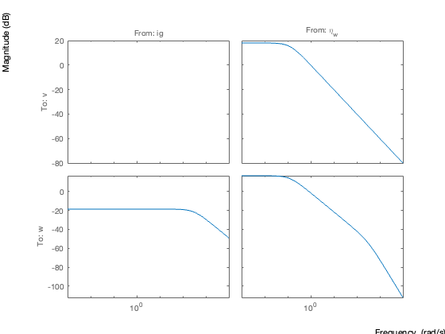
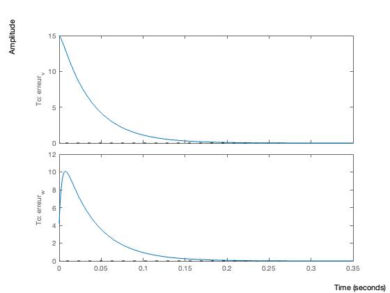
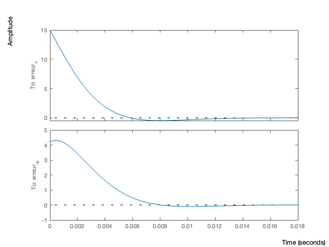
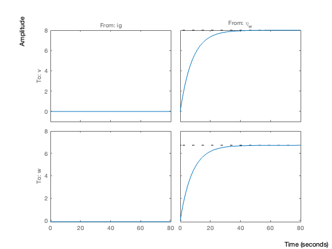
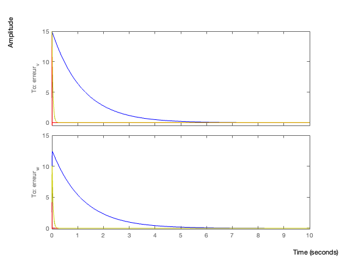
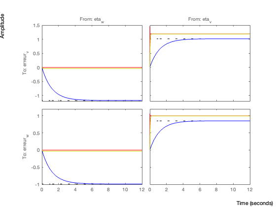

Contents
close all
clear all
clc
paramètres
rho = 1.225 ;
r = 15 ;
Cp = 0.44 ;
Ke = 4236 ;
J = 120.5 ;
lambda = 4.2 ;
w0 = 4.2 ;
ig0 = 36.14 ;
a = -0.125 ;
v0 = 15 ;
alpha0 = (1/2)*Cp*r*r*rho*pi ;
A = [a 0 ; (3*alpha0*v0^2)/(J*w0) (-alpha0*v0^3)/(J*w0^2)]
B = [0 ; -Ke/J]
E = [1 ; 0]
C = [0 1]
D = 0
sys = ss(A, [B E], eye(2), D,'Statename',{'v','w'},'Inputname',{'ig','\eta_w'},'Outputname',{'v','w'})
tf_sys = tf(sys)
poles = pole(tf_sys)
zeros = tzero(tf_sys)
bodemag(sys)
A =
-0.1250 0
254.0730 -302.4679
B =
0
-35.1535
E =
1
0
C =
0 1
D =
0
sys =
A =
v w
v -0.125 0
w 254.1 -302.5
B =
ig \eta_w
v 0 1
w -35.15 0
C =
v w
v 1 0
w 0 1
D =
ig \eta_w
v 0 0
w 0 0
Continuous-time state-space model.
tf_sys =
From input "ig" to output...
v: 0
-35.15
w: ---------
s + 302.5
From input "\eta_w" to output...
1
v: ---------
s + 0.125
254.1
w: ---------------------
s^2 + 302.6 s + 37.81
Continuous-time transfer function.
poles =
-302.4679
-0.1250
-302.4679
-0.1250
zeros =
-302.4679
-0.1250

observateur
V = 1 ;
W = eye(2) ;
K = lqr(A',C',W,V)' ;
erreur1 = ss ((A-K*C),[-E K],eye(2),D, 'Statename',{'v','w'},'Inputname',{'eta_w','eta_v'},'Outputname',{'erreur_v','erreur_w'});
initial(erreur1,[v0 w0])
figure(1) ;
bodemag(erreur1) ;title('V=1 et W = Id')
V = 1 ;
W = 1000*E*E' ;
K = lqr(A',C',W,V)' ;
erreur2 = ss ((A-K*C),[-E K],eye(2),D, 'Statename',{'v','w'},'Inputname',{'eta_w','eta_v'},'Outputname',{'erreur_v','erreur_w'});
initial(erreur2,[v0 w0])
figure(2) ;
bodemag(erreur2) ; title('V=1 et W = 1000*E*E')
V = 0.001 ;
W = 1000*E*E' ;
K = lqr(A',C',W,V)' ;
erreur3 = ss ((A-K*C),[-E K],eye(2),D, 'Statename',{'v','w'},'Inputname',{'eta_w','eta_v'},'Outputname',{'erreur_v','erreur_w'});
initial(erreur3,[v0 w0])
figure(3) ;
bodemag(erreur3) ;title('V=0.001 et W = 1000*E*E')
V = 0.001 ;
W = eye(2) ;
K = lqr(A',C',W,V)' ;
erreur4 = ss ((A-K*C),[-E K],eye(2),D, 'Statename',{'v','w'},'Inputname',{'eta_w','eta_v'},'Outputname',{'erreur_v','erreur_w'});
initial(erreur4,[v0 w0])
figure(3) ;
bodemag(erreur4) ;title('V=0.001 et W = Id')
initial(sys, [v0,w0])
step(sys)
figure(6)
initial(erreur1,'b',erreur2,'g',erreur3,'r',erreur4,'y',[v0,w0]) ; title ('erreur initiale des 4 erreurs')
figure(5)
bodemag(erreur1,'b',erreur2,'g',erreur3,'r',erreur4,'y') ; title ('bodemag des 4 erreurs')
step(erreur1,'b',erreur2,'g',erreur3,'r',erreur4,'y')
    